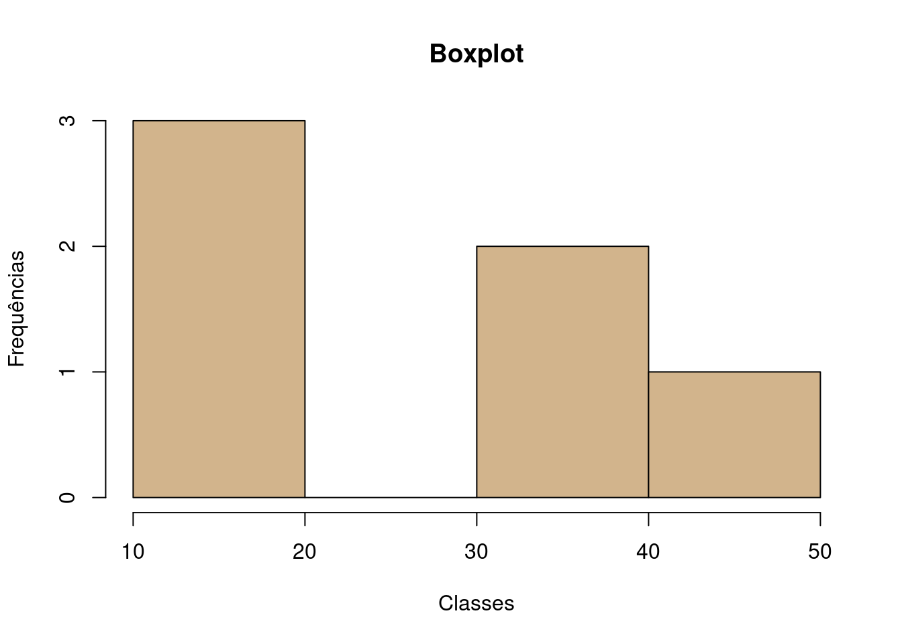

# Soma
2+2[1] 4# Subtração
4-2[1] 2# Multiplicação
2*3[1] 6# Divisão
4/2[1] 2# Exponenciação
2^3[1] 8R é uma linguagem de programação voltada para análises estatísticas, atualmente mantida pela R Foundation for Statistical Computing. Sua origem deriva da linguagem S e começou a ser desenvolvida em 1992.
Seu código fonte é aberto e pode ser instalado sem custos em diversos sistemas operacionais, incluindo Windows, Mac e Linux. Além das funções básicas, suas possibilidades de uso são expandidas através da utilização de pacotes, que também são gratuitos. Através dos pacotes, que podem ser criados por qualquer usuário, a linguagem R vem ganhando grande espaço na área acadêmica, acompanhando rapidamente o desenvolvimento de diversas áreas do conhecimento.
Uma copia do R pode ser obtida gratuitamente no site https://cran.r-project.org/. Atente para o sistema operacional antes de efetuar o download.
Após a instalação do R, ele já pode ser usado através de sua interface gráfica padrão. Contudo, é comum a utilização de interfaces de desenvolvimento (IDE - Integrated Development Environment) criada por terceiros.
Neste material, iremos utilizar uma IDE chamada RStudio. Ela pode ser obtida gratuitamente no site https://www.rstudio.com/products/RStudio/.
Após instalar e abrir o RStudio, você verá na tela duas áreas principais. A primeira é chamada de script e a segunda de console.
A área de script é onde digitamos os comandos utilizados no R. Após preparar um comando, ele é executado pressionando o botão run na interface ou pressionando Ctrl + r no teclado. Ao executar um comando, ele será reproduzido na área do console e seu resultado virá logo abaixo.
O script é um arquivo de texto que pode ser salvo e reaproveitado posteriormente. É comum encontrarmos em scripts do R linhas precedidas com o caractere #. Este simbolo indica um comentário, ou seja, um texto que não será interpretado como um comando no R.
O script é a forma mais tradicional de criar códigos para o R, mas ele tem algumas limitações. Por ser apenas um arquivo de texto simples, ele não é capaz de armazenar os resultados produzidos pelo R, guardar figuras e ser esteticamente apresentável.
Por estes motivos e na onda da ciência reprodutível, foi criado o R Notebook. Um notebook é uma uma espécie de script versão 2.0, onde é possível escrever comentários com formatação, inserir código do R e ver o seu resultado logo abaixo. E a melhor parte: um notebook pode ser exportado para HTML ou PDF facilmente, facilitando o envio de pesquisas feitas com o R.
Este arquivo que você está visualizando é um R Notebook. Os asteríscos e alguns símbolos que você está vendo no texto é uma forma de formatação chamada Markdown. Por exemplo, dois asterísticos entre uma palavra fazem com que ela fique em negrito. Neste link tem um guia desta linguagem.
Para ver como está ficando o seu notebook, clique no botão Preview. Uma página irá aparecer com a pré-visualização do seu notebook. Para exportar para HTML ou PDF, use a seta para abaixo ao lado do botão (Knit to…).
Os primeiros comandos no R são funções muito básicas para operações matemáticas. A parte verde abaixo é um chunk de código R no notebook. Isto indica ao RStudio que esta parte do texto deve ser intepretada como código R e não como texto. Para executar um chunk, pressione Ctrl + Shift + Enter.
# Soma
2+2[1] 4# Subtração
4-2[1] 2# Multiplicação
2*3[1] 6# Divisão
4/2[1] 2# Exponenciação
2^3[1] 8Se tudo correu bem, você deve ver acima o resultado das operações. Use o preview do notebook para ver como está ficando o resultado do documento.
Realize a seguinte operação no R \(((2+3(5))/10)^2\).
((2+3*5)/10)^2[1] 2.89Resultado correto: 2,89.
Funções são comandos que apresentam resultados com base em um ou mais argumentos. Teste os exemplos abaixo.
# Raiz quadrada
sqrt(x=9)[1] 3# Combinação de 10 elementos tomados 2 a 2
choose(n=10, k=2)[1] 45# e^x
exp(2)[1] 7.389056# Logarítmo natural
log(1)[1] 0Calcule a raiz quadrada do logaritmo de 10 no R.
sqrt(log(x = 10))[1] 1.517427Resultado correto: 1,51.
Os resultados de operações simples e funções no R podem ser armazenados na memória para utilização posterior através de objetos.
Na linguagem R, objetos são abstrações na memória que podem conter desde um simples número até complexos bancos de dados. Estude os comandos abaixo.
# Criar o objeto x
x <- 2
# Imprimir o objeto x
x[1] 2# Operações com o objeto x
x^2[1] 4x+x[1] 4# Apagar o objeto x
rm(x)
# Criar o vetor y
y <- c(2, 5, 10, 11.3, 12)
# Imprimir o vetor y
y[1] 2.0 5.0 10.0 11.3 12.0# Elevar o vetor y ao quadrado
y^2[1] 4.00 25.00 100.00 127.69 144.00# Apagar o vetor y
rm(y)
# Criar o vetor 'notas'
notas <- c(60, 50, 20, 50, 90)
# Ordenar o vetor 'notas'
notas <- sort(notas)
# Imprimir o vetor 'notas'
notas[1] 20 50 50 60 90Crie um objeto chamado dados com os valores {5, 7, 12.7, 13, 15}. Eleve ao quadrado e obtenha o resultado da soma dos valores elevados com a função sum(x).
dados <- c(5, 7, 12.7, 13, 15)
sum(dados^2)[1] 629.29Resultado correto: 629,29.
Estes operados verificam afirmações de lógica, veja os comandos abaixo.
# Igualdade
2 == 2[1] TRUE2 == 5[1] FALSE"a" == "a"[1] TRUE"a" == 'A'[1] FALSE# Maior
2 > 3[1] FALSE2 >= 3[1] FALSE# Menor
2 < 4[1] TRUE2 <= 1[1] FALSEc(1,2,2,4,7,10) < 7[1] TRUE TRUE TRUE TRUE FALSE FALSEA interface do R não é recomendada para a criação de banco de dados. Como já existem centenas de opções de softwares de qualidade e gratuitos para este fim, os bancos de dados podem ser criados em outros softwares como o Excel e importados posteriormente para o R.
Existem diversos pacotes para ler aquivos de banco de dados no R, como DBF, SAV, Stata e etc. Mas a forma mais segura e recomendada é exportar os dados no formato CSV para ser importados no R.
Para importar este arquivo CSV no R, teste o código abaixo. Se não funcionar, tente trocar “/” por “\”.
# Importar o arquivo 'notas.csv'
dados <- read.csv2(file = "data/notas.csv", header = TRUE)Atenção para os nomes das variáveis! Evite a utilização de nomes muito longos, caracteres especiais e acentos.
Após importar um banco de dados, verifique se tudo correu bem com estes comandos.
# Estrutura do objeto
str(dados)'data.frame': 6 obs. of 3 variables:
$ id : int 1 2 3 4 5 6
$ nome: chr "Maria" "João" "José" "Maria" ...
$ nota: num 10 20 32.6 15 40.9 ...# Listar os nomes das variáveis
names(dados)[1] "id" "nome" "nota"# Imprimir as seis primeiras linhas
head(dados) id nome nota
1 1 Maria 10.00
2 2 João 20.00
3 3 José 32.60
4 4 Maria 15.00
5 5 Gustavo 40.90
6 6 Alfredo 32.86# Imprimir as seis últimas linhas
tail(dados) id nome nota
1 1 Maria 10.00
2 2 João 20.00
3 3 José 32.60
4 4 Maria 15.00
5 5 Gustavo 40.90
6 6 Alfredo 32.86Para acessar uma variável específica:
dados$nota [1] 10.00 20.00 32.60 15.00 40.90 32.86Importe o mesmo arquivo do exemplo mas com o argumento header = FALSE. Execute o comando str(x) e veja o que mudou.
dados <- read.csv2(file = "data/notas.csv", header = TRUE)
str(dados)'data.frame': 6 obs. of 3 variables:
$ id : int 1 2 3 4 5 6
$ nome: chr "Maria" "João" "José" "Maria" ...
$ nota: num 10 20 32.6 15 40.9 ...Abaixo temos uma lista comandos para obter estatísticas básicas com o R e alguns gráficos.
# Importar o arquivo 'notas.csv'
dados <- read.csv2(file = "data/notas.csv", header = TRUE)
# Média
mean(dados$nota)[1] 25.22667# Mediana
median(dados$nota)[1] 26.3# Variância
var(dados$nota)[1] 144.4083# Desvio padrão
sd(dados$nota)[1] 12.017# Valor máximo
max(dados$nota)[1] 40.9# Valor mínimo
min(dados$nota)[1] 10# Amplitude
range(dados$nota)[1] 10.0 40.9# Coeficiente de variação
sd(dados$nota)/mean(dados$nota)[1] 0.476361# Quartis
quantile(dados$nota) 0% 25% 50% 75% 100%
10.000 16.250 26.300 32.795 40.900 # Sumário
summary(dados$nota) Min. 1st Qu. Median Mean 3rd Qu. Max.
10.00 16.25 26.30 25.23 32.80 40.90 # Boxplot
boxplot(dados$nota)# Histograma
hist(dados$nota, main = "Boxplot", xlab = "Classes", ylab = "Frequências", col = "tan")
O comando normal <- rnorm(1000) cria um objeto chamado normal com mil valores aleatórios obtidos à partir de uma distribuição normal \(N(0,1)\). Verifique a média e o desvio padrão deste objeto e crie um histograma.
normal <- rnorm(1000, mean = 10, sd = 5)
mean(normal)[1] 9.656022sd(normal)[1] 5.078785hist(normal)